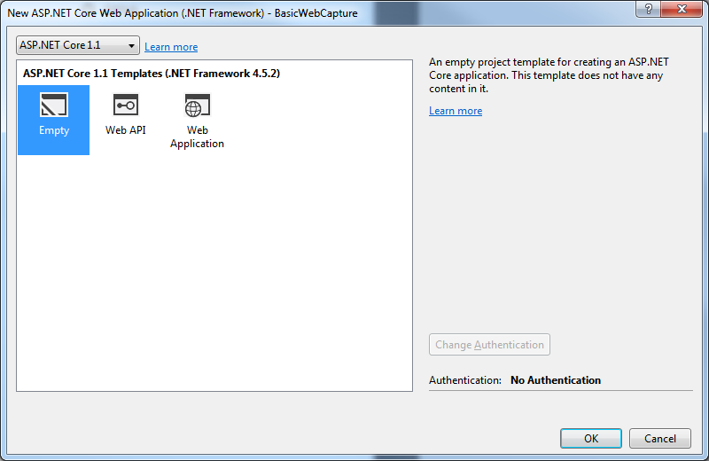

Starting with DotImage 11.0 WebCapture supports ASP.NET Core framework. This topic tells you how to create a sample application using Nuget and Bower packages. It's quite similar to the Demo Application, but with some differences specific to the new framework.
Follow these steps to create a new capture-enabled web project. Topics include adding the document viewer and scanning controls to your web page and handling uploaded content on the server.
This guide is intended to be followed precisely, but it is not supposed to give you a solution that is ready to deploy. Once you have succeeded building the example project, you can begin modifying it to fit your organization.
Set up a new project
A capture-enabled web application requires these essential elements:
- A client-side HTML page containing the web scanning controls and document viewer.
- A server-side startup class that will be used for configuring our web host.
- WebCapture and WebDocumentViewer resources files.
- An upload location for scanned documents.
Note It's highly recommended to use the version 15.8 or newer of Visual Studio 2017 for this demo.
Start by creating a new ASP.NET Core Web Application (.NET Framework) in Visual Studio targeting .NET 4.7.1.
Note In the following instructions the project is called WebCaptureBasic.
Choose Empty template on the following window

Visual Studio automatically will create you a project with "Hello world" application. It already has a Startup class and
all necessary Nuget packages for running this application as self-hosted, of course, you can use IIS Express instead.
Add Nuget packages for server-side
Add the Nuget package Atalasoft.dotImage.WebControls.Core.x86. It automatically downloads all necessary dependencies on other DotImage and ASP.NET Core components. If you plan to run your application on a 64-bit server, you should use the package Atalasoft.dotImage.WebControls.Core.x64.
Since the Web Document Viewer and Web Capture Service use a file system to save scan results or show results on the page, you also need the package Microsoft.AspNetCore.StaticFiles.
Add packages for client-side
Web Document Viewer JS package can be downloaded using npm or Bower. Since the Bower is maintained and its support was deprecated in VS 2017 15.5 update it's highly recommended to use npm packages, however, using of Bower with VS2017 is easier than npm and requires less additional actions. You can choose any package manager and read only section that is related to it.
Add Bower packages for client-side
First of all, you need to manually add two empty javascript files to the project root. First of them is bower.json and it will contains
our project bower dependencies. The second one is .bowerrc, we need it to configure where we want store bower packages and from where they should
be downloaded.
Now we should fill these javascript files. We will start from .bowerrc file, in this file we add the folder where bower should download all packages and, since Microsoft doesn't update their bower executable, we need to manually setup where packages should be found. The result file will be looked like this
{
"directory": "wwwroot/lib",
"registry": "https://registry.bower.io"
}Now you can add a Bower package web-document-viewer, it also automatically adds all necessary dependencies. To do this, open the bower.json file, and write its contents like this
{
"name": "asp.net",
"private": true,
"dependencies": {
"web-document-viewer": "~11.1.0",
"web-capture-service": "~11.1.0"
}
}In this file we setup package name, made it private, in order to do not publish it accindentally, and added two dependencies to a web-document-viewer package and to a web-capture-service package. The ~ symbol before the version allows us to download latest patch version of the package.
Add npm packages for client-side
To add npm packages you need to create a package.json from npm Configuration file template, add there a web-document-viewer and a web-capture-service packages, and save the file. After that the Visual Studion installs this package with all dependencies to node_modules folder in project root. This folder can not be accessed from the web application without additional code modifications on server-side, but for security reasons it's totally okay. You need to place all necessary files from this folder to wwwroot\<subfolder> path, it can be done manually of with using help of scripts.
Also, if you use npm version 5 or higher, don't forget to commit package-lock.json file in order to be sure, that every time the same set of packages with same versions will be installed.
Configure npm packages deployment
To make life easier with scripts deployment we add some packages in our package.json file. First of them is gulp, using it we create several tasks that will be run on every build target "Build" and "Clean". The second package is rimraf - it's needed for easy folde removal on "Clean". As a result, package.json file could be look like this:
{
"version": "1.0.0",
"name": "web-capture-service-basic",
"private": true,
"devDependencies": {
"web-document-viewer": "~11.1.0",
"web-capture-service": "~11.1.0",
"gulp": "^4.0.0",
"rimraf": "^2.0.0"
}
}After that, when all packages are installed, you need to add a gulpfile.js, VS2017 doesn't provide a special template for it, so you can use a generic template for JavaScript files, or don't use anything. And there we add all necessary code, that will help us to manipulate with scripts files from node_modules folder and copy them to wwwroot\lib. See the code below:
/// <binding BeforeBuild='build' Clean='clean' />
"use strict";
const gulp = require("gulp");
const rimraf = require("rimraf");
const libPath = 'wwwroot/lib/'; //Path where all dependencies should be copied
const nodeModules = "node_modules/"; //Folder where node moduels stored by default
//List of dependecies for our application
//src - list of files of wildcard paths to files to copy
//dest - folder name of path relative to libpath variable where files should be copied
const dependencies = [
{
src: ["jquery/dist/jquery.js", "jquery/dist/jquery.min.js"],
dest: "jquery"
},
{
src: ["jquery-ui-dist/jquery-ui.js", "jquery-ui-dist/jquery-ui.min.js"],
dest: "jquery-ui"
},
{
src: ["jquery-ui-dist/jquery-ui.css", "jquery-ui-dist/jquery-ui.min.css"],
dest: "jquery-ui/css"
},
{
src: ["raphael/raphael.js", "raphael/raphael.min.js"],
dest: "raphael"
},
{
src: ["clipboard/dist/*"],
dest: "clipboard"
},
{
src: ["web-document-viewer/*.js", "web-document-viewer/*.css"],
dest: "web-document-viewer"
},
{
src: ["web-document-viewer/images/*"],
dest: "web-document-viewer/images"
},
{
src: ["web-capture-service/*.js", "web-capture-service/*.msi"],
dest: "web-capture-service"
}
];
function getSourcePaths(rootpath, paths) {
return paths.map(path => rootpath + path);
}
gulp.task("build",
(done) => {
dependencies.forEach(dep => {
gulp.src(getSourcePaths(nodeModules, dep.src)).pipe(gulp.dest(`${libPath}/${dep.dest}`));
});
done();
});
gulp.task("clean",
(done) => {
return rimraf(libPath, done);
});
gulp.task("rebuild", gulp.series("clean", "build"));Besides comments in the code, there are several notes about it:
- The first line of this code is a special hint for
Task Runner Explorerthat's built-in Visual Studio. It tell VS to run gulp tasks before MSBuild targets "Build" and before "Clean" targets. - The list of dependencies in this sample is configured manually, and needs to be carefully revised when you upgrade some of packages, in order to don't miss any important file.
- The task "rebuild" doesn't attached to any MSBuild target, and could be launched manually from
Task Runner Explorerwindow.
That's all, now when you build your project, the lib folder will be added to wwwroot with all necessary scripts and resources, and application can easily access to them without any hacks. Note, that you can manipulate by list of files, and for instance doesn't copy unminified resources at all, which makes your application smaller.
Create the upload location
Create a new directory under the wwwroot folder of your project called atala-capture-upload.
It is the folder that will be used for storing images uploaded by the web scanning controls.
Prepare Startup class
Before we can use DotImage middlewares, we need to configure our application for them.
ConfigureServices method
Web Capture Service uses multipart content-type to upload scanned or imported images to a server.
So, we need to setup our server length limits of these requests. To simplify our code, we extend limits to the maximum values.
To do this, we configure a FormOptions using next code:
services.Configure<FormOptions>(opt =>
{
opt.BufferBodyLengthLimit = long.MaxValue;
opt.ValueLengthLimit = int.MaxValue;
opt.MultipartBodyLengthLimit = long.MaxValue;
});Configure method
How was mentioned before, Web Document Viewer and Web Capture need to access to the file system.
So, we need to add middlewares to work with files. To do this, you need to add following strings in the Startup.Configure method:
app.UseDefaultFiles()
.UseStaticFiles();Also, you need to delete "Hello world" code string, since we don't need it.
Set up server-side components
Add the Web Document Viewer middleware
The Web Document Viewer middleware is responsible for communicating with the Web Document Viewer embedded in your page and is separate from the capture middleware.
Add a new line of code to the Startup.Configure method:
app.Map("/wdv", wdvApp => { wdvApp.RunWebDocumentViewerMiddleware(); });That's all! If you want to customize this middleware, you can choose another overload of the method
RunWebDocumentViewerMiddleware that accepts implementation of the interface IWebDocumentViewerCallbacks.
Add the Web Capture middleware
The Web Capture middleware is responsible for handling file uploads from the scanning controls embedded in your page, and routing them to their next destination along with any necessary metadata. It is also responsible for supplying the scanning controls with the available content and document types, and status information.
For this guide, we will create a default middleware, without any customization.
But you can implement the interface IWebCaptureServiceCallbacks and pass it to the method RunWebcaptureMiddleware.
Add a new line of code to the Startup.Configure method, so the result code will be looked the next way:
app.Map("/wcs", wcsApp => wcsApp.RunWebCaptureMiddleware())
.Map("/wdv", wdvApp => wdvApp.RunWebDocumentViewerMiddleware());Set up the scanning controls and viewer
The setup for web scanning just requires placing some JavaScript, CSS, and HTML into your page. And the first step is to add the new page to your web application. To do this, add a new HTML file with name index.html to the wwwroot folder.
Include the web resources
Open index.html and replace its head section with the following script and link tags to include the necessary Web Document Viewer code and dependencies. There are some differences in scripts locations if you using Bower or nmp. Choose the code that corresponds to selected package manager system:
Bower resources location
<head>
<!-- Scripts for Web Viewing -->
<script src="lib/jquery/jquery.min.js" type="text/javascript"></script>
<script src="lib/jquery-ui/jquery-ui.min.js" type="text/javascript"></script>
<script src="lib/raphael/raphael.min.js" type="text/javascript"></script>
<script src="lib/clipboard/dist/clipboard.min.js" type="text/javascript"></script>
<script src="lib/web-document-viewer/atalaWebDocumentViewer.js" type="text/javascript"></script>
<!-- Script for Web Capture -->
<script src="lib/web-capture-service/atalaWebCapture.js" type="text/javascript"></script>
<!-- Style for Web Viewer -->
<link href="lib/jquery-ui/css/jquery-ui.min.css" rel="stylesheet" />
<link href="lib/web-document-viewer/atalaWebDocumentViewer.css" rel="stylesheet" />
</head>npm resources location
<head>
<!-- Scripts for Web Viewing -->
<script src="lib/jquery/jquery.min.js" type="text/javascript"></script>
<script src="lib/jquery-ui/jquery-ui.min.js" type="text/javascript"></script>
<script src="lib/raphael/raphael.min.js"></script>
<script src="lib/clipboard/clipboard.min.js"></script>
<script src="lib/web-document-viewer/atalaWebDocumentViewer.js" type="text/javascript"></script>
<!-- Script for Web Capture -->
<script src="lib/web-capture-service/atalaWebCapture.js" type="text/javascript"></script>
<!-- Style for Web Viewer -->
<link href="lib/jquery-ui/css/jquery-ui.min.css" rel="stylesheet" />
<link href="lib/web-document-viewer/atalaWebDocumentViewer.css" rel="stylesheet" />
</head>Configure the controls
The web scanning and web viewing controls need to be initialized and configured to set up connections to the right middlewares, specify behavior for events, and so forth. This can be done with another block of JavaScript, either included or pasted directly within your page's head below the previously added dependencies.
<script type="text/javascript">
// Initialize Web Scanning and Web Viewing
$(function () {
try {
var viewer = new Atalasoft.Controls.WebDocumentViewer({
parent: $('.atala-document-container'),
toolbarparent: $('.atala-document-toolbar'),
serverurl: 'wdv'
});
Atalasoft.Controls.Capture.WebScanning.initialize({
handlerUrl: 'wcs',
onScanClientReady: function (eventName, eventObj) {
console.log("Scan Client Ready");
//Set encryption key for scan/import results located in persistent store in the UserProfile folder
Atalasoft.Controls.Capture.WebScanning.LocalFile.setEncryptionKey("foobar");
},
onImageAcquired: function (eventName, eventObj) {
console.log("Image Acquired");
// Remove image as temporary result
eventObj.discard = true;
// Use LocalFile API for upload scan result to server with specified settings
Atalasoft.Controls.Capture.WebScanning.LocalFile.asBase64String(eventObj.localFile,
"jpg",
{
quality: 5
},
function (data) { Atalasoft.Controls.Capture.UploadToCaptureServer.uploadToServer(data); });
},
onUploadCompleted: function (eventName, eventObj) {
console.log('Upload Completed: ' + eventObj.success);
if (eventObj.success) {
console.log("atala-capture-upload/" + eventObj.documentFilename);
viewer.OpenUrl("atala-capture-upload/" + eventObj.documentFilename);
Atalasoft.Controls.Capture.CaptureService.documentFilename = eventObj.documentFilename;
}
},
scanningOptions: { pixelType: 0, deliverables: { localFile: { format: "tif" } } }
});
}
catch (error) {
alert('Thrown error: ' + error.description);
}
});
</script>Several additional options and handlers can be specified in the initialization routines for web scanning and viewing. However, this example represents the minimal configuration necessary for web scanning with an integrated document viewer. Additional information can be found in the blog post about Web Capture Service.
Add the UI
Insert the following HTML code to your project to create a basic viewer UI. This includes the Web Document Viewer, drop-down box to choose scanners and buttons to drive the UI.
<body>
<p>
Select Scanner:
<select class="atala-scanner-list" disabled="disabled" name="scannerList" style="width: 22em">
<option selected="selected">(no scanners available)</option>
</select>
</p>
<p>
<input type="button" class="atala-scan-button" value="Scan" />
<input type="button" class="atala-local-file-import-button" value="Import" />
</p>
<div>
<div class="atala-document-toolbar" style="width: 670px;"></div>
<div class="atala-document-container" style="width: 670px; height: 500px;"></div>
</div>
</body>